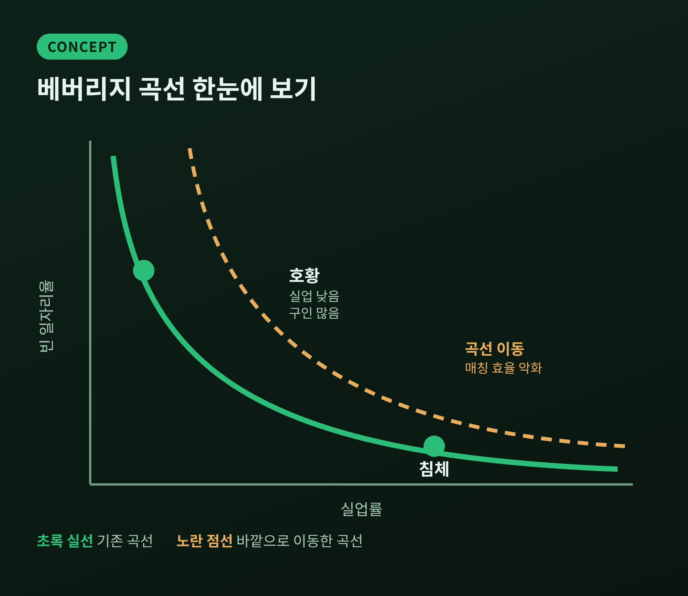
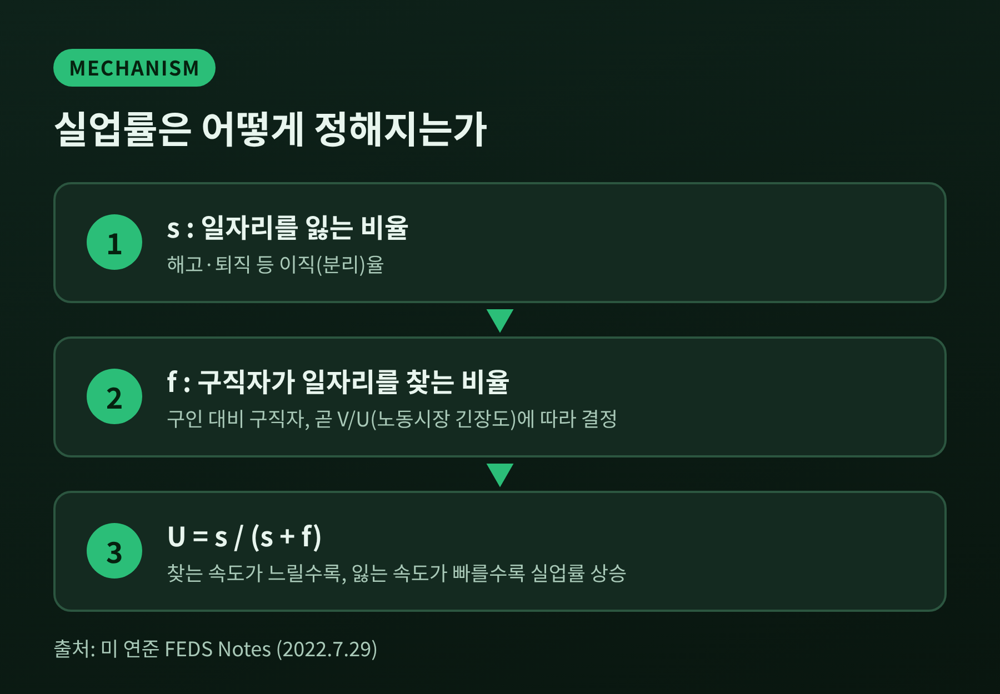
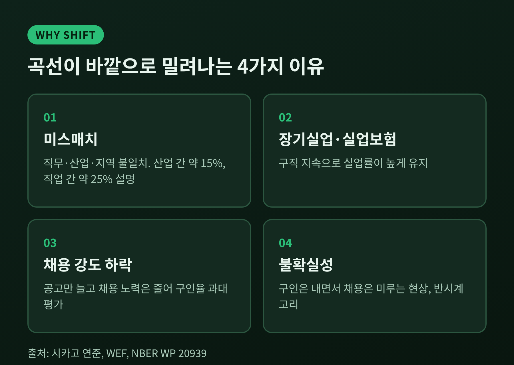
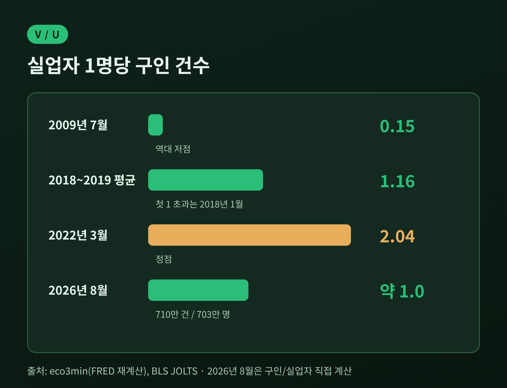
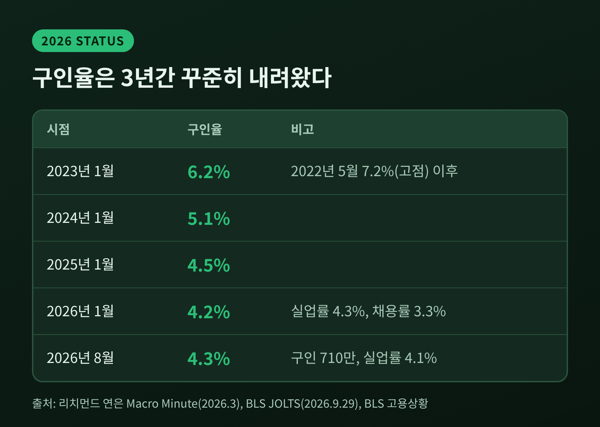

베버리지 곡선으로 보는 노동시장 매칭, 빈 일자리와 실업자가 공존하는 이유


이번 글에서는 베버리지 곡선과 노동시장 매칭을 정리해 보겠습니다. 구인 공고가 넘치는데도 일자리를 못 구하는 사람이 있는 까닭을 살펴봅니다.
핵심 답변부터 말씀드리면 이렇습니다. 일자리와 구직자가 서로를 찾는 데에는 시간과 비용이 들고, 그 마찰이 클수록 두 숫자가 함께 높아집니다. 2026년 10월 현재 미국 노동시장은 마찰의 문제보다 구인 수요가 서서히 식는 쪽에 가까워 보입니다.
■ 베버리지 곡선이란 무엇인가
베버리지 곡선은 실업률을 가로축, 빈 일자리율을 세로축에 놓고 그린 우하향 곡선입니다. 빈 일자리율은 구인 건수를 노동력으로 나눈 값입니다. 이름은 영국 경제학자 윌리엄 베버리지에서 왔고, 미국에서는 노동통계국의 구인·이직 조사(JOLTS) 자료로 그립니다.
읽는 법은 단순합니다. 경기가 좋으면 실업은 낮고 구인은 많아 곡선의 왼쪽 위에 놓입니다. 침체가 오면 구인은 줄고 실업은 늘어 오른쪽 아래로 내려갑니다.
곡선 위를 오가는 움직임은 경기의 문제입니다. 반면 곡선 자체가 바깥쪽, 즉 오른쪽 위로 밀려나는 것은 다른 이야기입니다. 같은 구인 수준에서 실업이 더 높아졌다는 뜻이고, 노동시장의 짝짓기 효율이 나빠졌다는 신호로 읽습니다. 노동통계국도 곡선의 위치는 노동시장의 효율성이 결정한다고 설명합니다.
■ 빈자리와 실업자가 공존하는 이유, 탐색 마찰
시장이 완벽하다면 빈자리와 실업자는 동시에 존재할 수 없습니다. 하지만 현실의 노동시장은 그렇지 않습니다. 이 문제를 정면으로 다룬 이들이 2010년 노벨 경제학상을 받은 피터 다이아몬드, 데일 모텐슨, 크리스토퍼 피사리데스입니다. 수상 이유는 "탐색 마찰이 있는 시장의 분석"이었습니다.
기업은 사람을 찾는 데 시간을 쓰고, 구직자는 일자리를 찾는 데 시간을 씁니다. 서로를 즉시 알아보지 못하니 구인과 실업이 동시에 남습니다. 이 모델은 실업급여 수준이나 고용·해고 규제가 실업과 공석, 임금에 어떤 영향을 주는지도 보여줍니다. 실업급여가 후할수록 실업률이 높아지고 탐색 기간이 길어진다는 결론도 여기에 포함됩니다.
연준 연구자들이 쓰는 식은 간결합니다. 실업률은 s/(s+f)로 표현됩니다. s는 일자리를 잃는 비율, f는 구직자가 일자리를 찾는 비율입니다. f는 구인 대비 구직자의 비율, 곧 노동시장의 팽팽함에 따라 정해집니다.

이 구조에서 곡선이 볼록해집니다. 빈자리가 이미 많을 때에는 구인이 하나 더 늘어도 채용으로 이어지는 몫이 줄어듭니다. 그래서 시장이 팽팽한 구간에서는 곡선이 가파릅니다. 구인이 꽤 줄어도 실업은 조금만 오르는 구간입니다. 이 성질이 뒤에서 다룰 연착륙 논쟁의 뼈대가 됩니다.
■ 곡선은 왜 바깥으로 밀려나는가
대침체(2007년 12월~2009년 6월) 이후가 대표적 사례입니다. 실업률은 5%에서 10.1%까지 올랐고, 곡선은 오른쪽 위로 이동한 것처럼 보였습니다. 시카고 연준 학술회의에서는 매칭 효율이 약 40% 떨어졌다는 추정이 나왔습니다.
원인을 두고 의견은 갈렸습니다. 주요 후보는 이렇습니다.
- 직무·산업·지역 간 미스매치: 산업 간 약 15%(0.8%p), 직업 간 약 25%(1.25%p) 정도를 설명하고, 주(州) 간 차이는 거의 설명하지 못했다는 분석이 있습니다.
- 장기실업과 실업보험 연장: 구직 활동을 이어 가게 해 실업률을 높게 유지했다는 주장입니다.
- 채용 강도의 하락: 기업이 공고는 냈지만 적극적으로 뽑지 않아, 구인율이 노동수요를 과대평가했다는 연구가 있습니다.
- 불확실성: 경기 확신이 서지 않으면 구인은 내면서 채용은 미룹니다. 침체 후 곡선이 반시계 방향 고리를 그리는 이유입니다.
조금 더 신중한 시각도 있습니다. 홀과 슐호퍼-울의 2015년 연구는 위기 이후의 이동이 2001~2007년에 이미 진행되던 추세의 연장이라고 봅니다. 그 추세를 보정하면 2012년의 노동시장은 2007~2008년과 같은 곡선 위에 있었다는 것입니다. 구직자를 한 덩어리로 보면 매칭 효율의 붕괴를 과대평가한다는 지적도 덧붙입니다. 시카고 연준에 모인 연구자들도 매칭 비효율이 실업에 기여하기는 하지만 상승분 전체를 설명하지는 못한다는 데 대체로 동의했습니다.

■ 2022년의 정점, 구인이 실업자의 두 배였던 시기
팬데믹 이후는 반대편 극단이었습니다. 2022년 5월 빈 일자리율은 7.2%로 팬데믹 이전 정점 4.6%를 크게 넘었고, 실업률은 3.6%였습니다. FRED 자료를 재계산한 지표로 보면 실업자 한 명당 구인 건수가 2022년 3월 2.04까지 올랐습니다. 이 지표는 2009년 7월 0.15로 바닥이었고, 2018년 1월에야 처음 1을 넘었습니다.

문제는 이 뜨거운 시장이 식을 때 실업이 얼마나 오르느냐였습니다. 답은 학자마다 달랐습니다. 샌프란시스코 연은의 분석에서 팬데믹 이후 자료로 곡선을 다시 그리면 매칭 효율이 약 25% 낮아진 것으로 나옵니다. 이 곡선에서 빈 일자리율이 4.6%로 내려가면 실업률은 3.6%에서 약 6.4%까지 갑니다. 반면 같은 분석이 소개한 가파른 곡선에서는 실업률이 약 4.4%에 그칩니다. 2022년 1~5월의 실제 매칭 효율도 팬데믹 이전보다 약 10% 낮은 수준이어서, 25%라는 추정보다 훨씬 작았습니다.
연준 연구자들의 계산도 비슷한 방향입니다. 빈 일자리율이 7%에서 4.6%로 내려갈 때 실업 상승폭은 대체로 1%p 안팎입니다. 다만 변수가 하나 있습니다. 해고가 늘어나면 곡선 자체가 바깥으로 밀립니다. 분리율이 25% 늘면 상승폭은 1.86~2.54%p, 50% 늘면 3.20~4.29%p로 커집니다. 한계도 분명합니다. 곡선 모양과 효율 추정치에 따라 결과가 크게 갈리므로, 어느 계산도 확정적 예측은 아닙니다.
■ 2026년 10월, 지금의 노동시장
구인은 오래 줄어 왔습니다. 구인율은 2023년 1월 6.2%에서 2024년 1월 5.1%, 2025년 1월 4.5%, 2026년 1월 4.2%로 내려왔습니다. 같은 기간 실업률은 2026년 1월 4.3%였습니다. 2026년 8월 JOLTS(9월 29일 발표)에서는 구인 710만 건에 구인율 4.3%였습니다. 채용은 520만 건(3.3%), 퇴직은 310만 건(1.9%), 해고는 160만 건(1.0%)입니다. 같은 달 실업률은 4.1%, 실업자는 약 703만 명이었습니다.
계산해 보면 실업자 한 명당 구인은 약 1.0건입니다. 2022년의 절반 수준이고, 2018~2019년 평균 1.16보다도 낮습니다. 다만 이 숫자는 조심해서 읽어야 합니다. 구인은 사업체 조사, 실업은 가구 조사에서 나오고, JOLTS 응답률은 2020년 이후 절반가량으로 떨어졌다는 지적이 있습니다.

흥미로운 점은 채용률 3.3%라는 낮은 숫자입니다. 리치먼드 연은의 분석에 따르면 팬데믹 이전의 관계를 그대로 적용할 경우 채용률 3.3%에는 실업률 6~10%가 따라와야 합니다. 실제는 4% 초반입니다. 퇴직도 해고도 낮은, 이른바 "저채용·저해고" 상태입니다. 제롬 파월 연준 의장은 이를 "묘한 균형"이라 표현했습니다.
그런데도 리치먼드 연은은 경고를 남깁니다. 최근의 월별 점은 팬데믹 이전 베버리지 관계와 부합하며, 구인이 계속 줄면 팬데믹 이전 패턴이 지침일 경우 실업이 오를 수 있다는 것입니다. 요컨대 곡선이 고장 난 것이 아니라, 곡선을 따라 서서히 내려오는 중일 가능성이 있습니다. 이 해석이 맞을지는 앞으로 해고가 어떻게 움직이느냐에 달려 있습니다.
정리하면 이렇습니다. 베버리지 곡선은 빈자리와 실업자가 왜 함께 있는지, 그리고 그 둘이 어떻게 움직이는지를 한 장으로 보여줍니다.
- 곡선 위의 이동은 경기, 곡선 자체의 이동은 매칭 효율의 문제입니다.
- 가파른 구간에서는 구인이 줄어도 실업이 덜 오르지만, 해고가 늘면 그 보호막이 사라집니다.
- 지금 확인할 지표는 구인율보다 해고 규모와 채용의 회복 여부입니다.
결국 남는 것은 하나입니다. "빈자리가 있다는 것과 일자리가 있다는 것은 다른 이야기"라는 점입니다. 두 숫자 사이에는 사람이 서로를 찾아가는 시간이 놓여 있습니다. 그 시간이 길어질 때 숫자 뒤의 구직자 한 사람 한 사람이 비용을 치르게 됩니다.